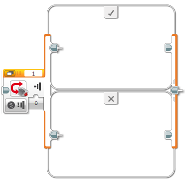
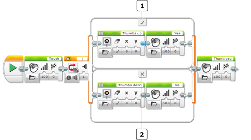
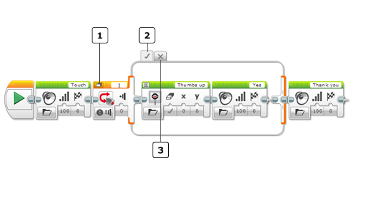
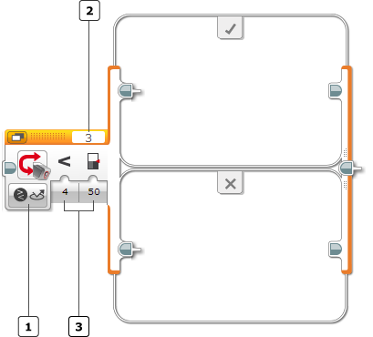
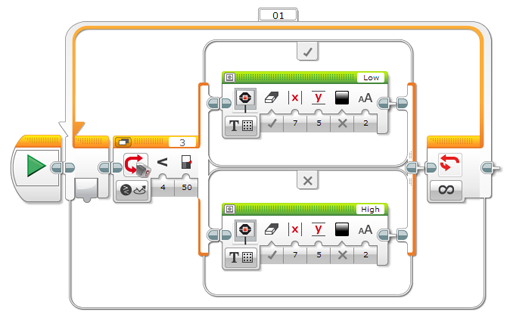
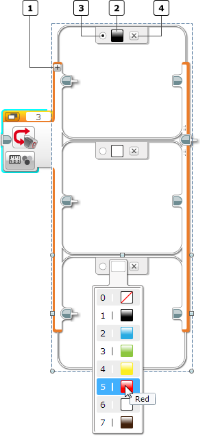
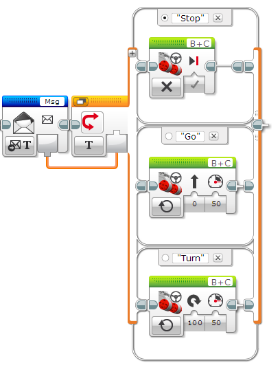
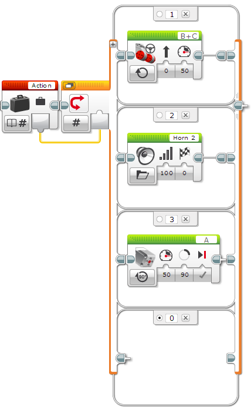
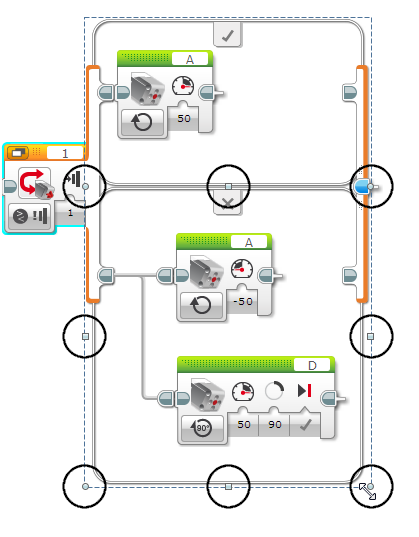

					<table cellpadding="0" cellspacing="0" border="0"><tbody><tr><td>
	
						<h1>切换模块<a name="top"></a></h1>
		<div id="block_313" class="block blockHeader">
				<table cellspacing="0" cellpadding="0" border="0">
			<tbody><tr>
				<td valign="top" class="image"></td>
				<td valign="top" class="description"><div class="text-wrapper">切换模块是可以包含两个或更多编程模块序列的容器。每个序列都称为一种“情况”。切换开头处的测试确定将运行的情况。每当执行切换时，只会运行一种情况。</div></td>
			</tr>
		</tbody></table>
			</div>
	<div id="block_314" class="block blockStep">
		<div class="title"></div>
		<div class="description">此处显示的切换测试可以基于传感器数据值或来自<a href="./index.html?id=DataWires">数据线</a>的值，决定要运行的情况。在选择并运行一种情况之后，程序会继续执行切换之后的任何模块。<br>
<br>
</div>
	</div>
	<div id="block_1264" class="block blockChaptor">
		<div class="title"><a name="Example" style="position:relative; top:-10px;"></a>示例</div>
		<div class="description">下面的程序使机器人说“Touch”，然后测试是否按压了触动传感器。如果是这样，则“真”（顶部）情况执行，机器人会显示“Thumbs up”（拇指向上）并说“Yes”。如果未按压触动传感器，则“伪”（底部）情况执行，机器人会显示“Thumbs down”（拇指向下）并说“No”。在切换之后，机器人会说“Thank you”。</div>
	</div>
	<div id="block_315" class="block blockExample">
		<div class="title">示例</div>
		<div class="image"></div>
		<div class="description"> “真”情况<br>
 “伪”情况<br>
<br>
在机器人说完“Touch”之后，会立即测试触动传感器。如果在该瞬间按下了传感器，则切换会运行“真”情况，否则会运行“伪”情况。</div>
	</div>
	<div id="block_638" class="block blockTip">
		<div class="title">提示和技巧</div>
		<div class="boxContent">
			<div class="description"></div>
			<div id="block_637" class="block blockTable bullets">
		<table class="blockTable">
		
<tbody><tr><td>•</td><td>切换不等待传感器数据值或数据线达到特定值。测试在切换模块开始之后立即运行，并在测试之后立即选择和运行一种情况。 </td></tr><tr><td>•</td><td>在上面的程序中，可以在测试之前（甚至是在程序开始之前）按压触动传感器并在测试过程中按住，以确保切换执行“真”情况。尝试了解在按压传感器之前可以等待并仍使机器人说“Yes”的时间长度。 </td></tr><tr><td>•</td><td>如果不希望机器人在该情况下执行任何操作，则可以将切换中的任何情况保留为空。尝试从上面程序中的“伪”情况中删除两个模块，然后观察发生的情况。 </td></tr>		</tbody></table>
	</div>
		</div>
	</div>
		
	
	<div id="block_640" class="block blockChaptor">
		<div class="title"><a name="TabbedView" style="position:relative; top:-10px;"></a>选项卡视图</div>
		<div class="description">切换可以在平面视图中显示（如上面的示例所示），或是在选项卡视图中显示（如下所示）。在平面视图中，所有情况都显示在不同行中。在选项卡视图中，一次只能看到一种情况。 <br>
<br>
可以使用选项卡视图减少程序在屏幕上占用的空间。视图不影响切换的执行方式。<br>
<br>
<br>
<br>
 平面/选项卡选择器<br>
 “真”情况<br>
 “伪”情况<br>
<br>
要使切换在平面和选项卡视图之间进行切换，请单击平面/选项卡选择器。 <br>
<br>
要在选项卡视图中显示切换内的另一种情况，请单击切换边框顶部的不同选项卡。</div>
	</div>
	<div id="block_641" class="block blockTip">
		<div class="title">提示和技巧</div>
		<div class="boxContent">
			<div class="description">选项卡切换的所有情况中的模块都是程序的一部分，即使一次只能看到其中的某些模块。</div>
				</div>
	</div>
	<div id="block_643" class="block blockChaptor">
		<div class="title"><a name="ChooseTheSwitchTest" style="position:relative; top:-10px;"></a>选择切换测试</div>
		<div class="description"><br>
<br>
 模式选择器<br>
 端口选择器<br>
 输入<br>
<br>
使用模式选择器选择切换将用于选择要运行的情况的测试类型。可以测试传感器值或<a href="./index.html?id=DataWires">数据线</a>值。<br>
<br>
如果选择使用端口的模式，则使用<a href="./index.html?id=PortSelector">端口选择器</a>确保端口与传感器或电机连接到的 EV3 程序块上的端口匹配。<br>
<br>
可用<a href="./index.html?id=CaseSelector#Inputs">输入</a>会因模式而异。在某些模式中，可以将传感器值与<a href="./index.html?id=CaseSelector#Threshold">阈值</a>进行比较，在其他模式中，可以测试特定传感器值。下面介绍了模式。</div>
	</div>
	<div id="block_644" class="block blockChaptor">
		<div class="title"><a name="TestingASensorThreshold" style="position:relative; top:-10px;"></a>测试传感器阈值</div>
		<div class="description">切换模块包含读取数字传感器数据值并将其与<a href="./index.html?id=CaseSelector#Threshold">阈值</a>进行比较以获取“真”或“伪”结果的几种模式。例如，在“颜色传感器 － 比较 － 反射光线强度”模式中，可以测试来自颜色传感器的反射光线强度是否小于 50。 <br>
<br>
在这些模式中，切换模块包含两种情况。如果测试的结果为“真”，则“真”情况会执行，否则“伪”情况会执行。</div>
	</div>
	<div id="block_645" class="block blockTip">
		<div class="title">提示和技巧</div>
		<div class="boxContent">
			<div class="description">“真”情况是“平面”视图中顶部的情况（由钩形符号标记）。“伪”情况是底部的情况（由 "X" 标记）。</div>
				</div>
	</div>
	<div id="block_647" class="block blockStep">
		<div class="title"></div>
		<div class="description">要使用具有传感器阈值的模式，请选择<a href="./index.html?id=CaseSelector#Comparison">比较类型</a>（例如“小于”），然后输入要将传感器数据与之进行比较的<a href="./index.html?id=CaseSelector#Threshold">阈值</a>。切换模块会读取单个传感器读数并将其与阈值进行比较以获取“真”或“伪”结果。</div>
	</div>
	<div id="block_648" class="block blockExample">
		<div class="title">示例</div>
		<div class="image"></div>
		<div class="description">在此程序中，切换模块使用“颜色传感器 － 比较 － 反射光线强度”模式测试反射光线强度是否小于 50。如果是这样，则它显示“Low”，否则显示“High”。切换在<a href="./index.html?id=LoopCondition">循环</a>中重复执行，以便基于新传感器测试持续更新显示。</div>
	</div>
	<div id="block_649" class="block blockTip">
		<div class="title">提示和技巧</div>
		<div class="boxContent">
			<div class="description">传感器测试的进行速度非常快。如果上面的示例中没有<a href="./index.html?id=LoopCondition">循环</a>，则程序仅测试传感器一次并会快速完成，以致您甚至不会注意到。</div>
				</div>
	</div>
	<div id="block_651" class="block blockChaptor">
		<div class="title"><a name="TestingForSpecificSensorValues" style="position:relative; top:-10px;"></a>测试特定传感器值</div>
		<div class="description">以下模式允许切换测试特定传感器值。可以在切换中创建一种或多种与要测试的不同值对应的情况，切换会选择匹配情况。</div>
	</div>
	<div id="block_652" class="block blockTable ">
		<table class="blockTable">
		

			<tbody><tr>
<th>模式</th><th>用途</th><th>请参见</th>			</tr>
<tr><td>程序块按钮 － 测量 <a name="Mode_SwitchBrickButtonMeasure" style="position:relative; top:-10px;"></a></td><td>根据按压的程序块按钮在两种或更多情况之间进行选择。</td><td><a href="./index.html?id=UsingSensors_BrickButtons">使用程序块按钮</a></td></tr><tr><td>程序块按钮 － 比较 <a name="Mode_BrickButtonsCompare" style="position:relative; top:-10px;"></a>  <a name="Mode_SwitchBrickButtonCompare" style="position:relative; top:-10px;"></a></td><td>根据是按压、松开还是碰撞了所选程序块按钮之一，在两种情况之间进行选择。</td><td><a href="./index.html?id=UsingSensors_BrickButtons">使用程序块按钮</a></td></tr><tr><td>颜色传感器 － 测量 － 颜色 <a name="Mode_ColorSensorMeasureColor" style="position:relative; top:-10px;"></a>  <a name="Mode_SwitchColorSensorMeasureColor" style="position:relative; top:-10px;"></a></td><td>根据检测到的颜色在两种或更多情况之间进行选择。</td><td><a href="./index.html?id=UsingSensors_Color">使用颜色传感器</a></td></tr><tr><td>颜色传感器 － 比较 － 颜色 <a name="Mode_ColorSensorCompareColor" style="position:relative; top:-10px;"></a>  <a name="Mode_SwitchColorSensorCompareColor" style="position:relative; top:-10px;"></a></td><td>根据是否检测到所选颜色之一在两种情况之间进行选择</td><td><a href="./index.html?id=UsingSensors_Color">使用颜色传感器</a></td></tr><tr><td>红外传感器 － 测量 － 远程 <a name="Mode_InfraredSensorMeasureRemote" style="position:relative; top:-10px;"></a>  <a name="Mode_SwitchInfraredSensorMeasureBeaconRemote" style="position:relative; top:-10px;"></a></td><td>根据在 IR 信标上按压的按钮，从两种或更多情况中进行选择。</td><td><a href="./index.html?id=UsingSensors_Remote">使用红外传感器“远程”模式</a></td></tr><tr><td>红外传感器 － 比较 － 远程 <a name="Mode_InfraredSensorCompareRemote" style="position:relative; top:-10px;"></a>  <a name="Mode_SwitchInfraredSensorCompareRemote" style="position:relative; top:-10px;"></a></td><td>根据是否在 IR 信标上按压了指定按钮（或是否按压了指定按钮集合中的一个），在两种情况之间进行选择。</td><td><a href="./index.html?id=UsingSensors_Remote">使用红外传感器“远程”模式</a></td></tr><tr><td>触动传感器 <a name="Mode_SwitchBrickButtTouchSensor" style="position:relative; top:-10px;"></a>  <a name="Mode_SwitchTouchSensorCompare" style="position:relative; top:-10px;"></a></td><td>根据是否按压、松开或碰撞了触动传感器，在两种情况之间进行选择。</td><td><a href="./index.html?id=UsingSensors_Touch">使用触动传感器</a></td></tr><tr><td>超声波传感器 － 比较 － 存在 <a name="Mode_UltrasonicSensorComparePresence" style="position:relative; top:-10px;"></a>  <a name="Mode_SwitchUltrasonicSensorComparePresence" style="position:relative; top:-10px;"></a></td><td>基于是否在“仅侦听”模式中检测到超声波信号，在两种情况之间进行选择。</td><td><a href="./index.html?id=UsingSensors_Ultrasonic">使用超声波传感器</a></td></tr><tr><td>消息传递 <a name="Mode_Messaging" style="position:relative; top:-10px;"></a>  <a name="Mode_SwitchMessagingCompareText" style="position:relative; top:-10px;"></a>  <a name="Mode_SwitchMessagingCompareNumeric" style="position:relative; top:-10px;"></a>  <a name="Mode_SwitchMessagingCompareBoolean" style="position:relative; top:-10px;"></a></td><td>基于消息值在两种情况之间进行选择。</td><td><a href="./index.html?id=Messaging">消息传递</a></td></tr>		</tbody></table>
	</div>
	<div id="block_653" class="block blockChaptor">
		<div class="title"><a name="TestingForMultipleValues" style="position:relative; top:-10px;"></a>测试多个值</div>
		<div class="description">切换模块的传感器测量模式使您可以指定几个（两个或更多）要测试的传感器值。可以在切换中为每个值提供不同情况。例如，在“颜色传感器 － 测量 － 颜色”模式中，可以测试黑色、白色和红色，并创建三种不同情况（每种颜色对应一种情况）<br>
<br>
<br>
<br>
<br>
 添加情况<br>
 情况值<br>
 默认情况<br>
 删除情况<br>
<br>
要在传感器测量模式中使用多种情况，请单击“添加情况”按钮以创建所需数量的情况。对于每种情况，单击“情况值”可从列表中为传感器选择值。可以单击“删除情况”按钮以删除情况。<br>
<br>
单击“默认情况”按钮可将一种情况标记为默认情况。当传感器检测到与切换中任何情况都不匹配的值时，会执行默认情况。<br>
<br>
请参见编程示例：检测到时说出“Red”、“Green”和“Blue”（<a href="./index.html?id=UsingSensors_Color">使用颜色传感器</a>中）。<br>
<br>
请参见编程示例：程序块按钮控制面板（<a href="./index.html?id=UsingSensors_BrickButtons">使用程序块按钮</a>中）。</div>
	</div>
	<div id="block_654" class="block blockChaptor">
		<div class="title"><a name="TestingAValueFromADataWire" style="position:relative; top:-10px;"></a>测试来自数据线的值</div>
		<div class="description">在“逻辑”、“文本”和“数字”模式中，切换可以基于来自<a href="./index.html?id=DataWires">数据线</a>的值，选择要执行的情况。</div>
	</div>
	<div id="block_655" class="block blockChaptor">
		<div class="title"><a name="Modes" style="position:relative; top:-10px;"></a>模式</div>
		<div class="description"></div>
	</div>
	<div id="block_1413" class="block blockMode">
		<div class="title"><a name="Mode_Boolean" style="position:relative; top:-10px;"></a>“逻辑”模式</div>
		<div class="description">在“逻辑”模式中，切换基于<a href="./index.html?id=CaseSelector#Boolean">逻辑</a>输入在“真”情况与“伪”情况之间进行选择。可以使用<a href="./index.html?id=DataWires">数据线</a>将来自任何编程模块的“逻辑”输出连接到“逻辑”输入。<br>
<br>
编程示例：请参见<a href="./index.html?id=Compare">比较模块</a>。</div>
	</div>
	<div id="block_1414" class="block blockMode">
		<div class="title"><a name="Mode_String" style="position:relative; top:-10px;"></a>“文本”模式</div>
		<div class="description">在“文本”模式中，切换会将<a href="./index.html?id=CaseSelector#String">文本</a>输入的值与指定的两个或更多文本值进行比较（每个值对应一种情况）。具有与“文本”输入匹配的值的情况会执行。如果无值匹配，则默认情况会执行。 <br>
<br>
有关创建多种情况的信息，请参见上面的<a href="./index.html?id=CaseSelector#TestingForMultipleValues">测试多个值</a>。“文本”模式中的每种情况都具有可以直接键入到“情况值”中的文本值。</div>
	</div>
	<div id="block_657" class="block blockExample">
		<div class="title">示例</div>
		<div class="image"></div>
		<div class="description">在此示例中，“文本”模式中的切换使用<a href="./index.html?id=Messaging">消息传递</a>模块的输出，根据收到的消息在三种不同模式之间进行选择。</div>
	</div>
	<div id="block_1415" class="block blockMode">
		<div class="title"><a name="Mode_Numeric" style="position:relative; top:-10px;"></a>“数字”模式</div>
		<div class="description">在“数字”模式中，切换会将<a href="./index.html?id=CaseSelector#Number">数字</a>输入的值与指定的两个或更多数字值进行比较（每个值对应一种情况）。具有与<a href="./index.html?id=CaseSelector#Number">数字</a>输入匹配的值的情况会执行。如果无值匹配，则默认情况会执行。 <br>
<br>
有关创建多种情况的信息，请参见上面的<a href="./index.html?id=CaseSelector#TestingForMultipleValues">测试多个值</a>。“数字”模式中的每种情况都具有可以直接输入到“情况值”中的数字值。</div>
	</div>
	<div id="block_659" class="block blockExample">
		<div class="title">示例</div>
		<div class="image"></div>
		<div class="description">在此示例中，“数字”模式中的切换使用<a href="./index.html?id=Variable">变量</a>模块的输出，在三种不同模式之间进行选择。切换的默认情况为空，因此如果“动作”变量的值为 1、2 或 3 之外的任何值，则切换不会执行任何操作。</div>
	</div>
	<div id="block_660" class="block blockChaptor">
		<div class="title"><a name="ResizingASwitch" style="position:relative; top:-10px;"></a>调整切换大小</div>
		<div class="description">切换模块通常会自动扩展以便为拖动到情况内的新编程模块腾出空间。还可以在需要时手动调整情况大小。要在平面视图中调整切换内某个情况的大小，请单击要调整其大小的情况旁的左侧或右侧切换边框，然后拖动在外侧周围出现的大小调整手柄。 <br>
<br>
</div>
	</div>
	<div id="block_661" class="block blockTip">
		<div class="title">提示和技巧</div>
		<div class="boxContent">
			<div class="description">在选项卡视图中，所有情况都显示相同大小。调整一种情况的大小以使其更大会使所有情况都同样以更大空间进行显示。</div>
				</div>
	</div>
	<div id="block_663" class="block blockChaptor">
		<div class="title"><a name="Inputs" style="position:relative; top:-10px;"></a>输入 <a name="Parameters" style="position:relative; top:-10px;"></a></div>
		<div class="description">可用于切换模块的输入取决于所选模式。可以将输入值直接输入到模块中。或者，可以通过<a href="./index.html?id=DataWires">数据线</a>从其他编程模块的输出提供输入值。</div>
	</div>
	<div id="block_664" class="block blockTable ">
		<table class="blockTable">
		

			<tbody><tr>
<th>输入</th><th>类型</th><th>备注</th>			</tr>
<tr><td>逻辑 <a name="Boolean" style="position:relative; top:-10px;"></a></td><td>逻辑</td><td>用于在“逻辑”模式中选择情况</td></tr><tr><td>数字 <a name="Number" style="position:relative; top:-10px;"></a></td><td>数字</td><td>用于在“数字”模式中选择情况。</td></tr><tr><td>文本 <a name="String" style="position:relative; top:-10px;"></a></td><td>文本</td><td>用于在“文本”模式中选择情况。</td></tr><tr><td>比较类型 <a name="Comparison" style="position:relative; top:-10px;"></a>  <a name="Comparison2" style="position:relative; top:-10px;"></a></td><td>数字</td><td>具有阈值输入的模式比较类型。<br>
0：=（等于）<br>
1：≠（不等于）<br>
2：&gt;（大于）<br>
3：≥（大于或等于）<br>
4：&lt;（小于）<br>
5：≤（小于或等于）</td></tr><tr><td>阈值 <a name="Threshold" style="position:relative; top:-10px;"></a>  <a name="ThresholdValue" style="position:relative; top:-10px;"></a></td><td>数字</td><td>要将传感器数据与之进行比较的值（用于基于数字传感器值选择“真”情况或“伪”情况）。</td></tr><tr><td>（各种传感器类型的输入）</td><td></td><td>有关传感器数据的更多信息，请参见各种传感器类型的帮助。</td></tr>		</tbody></table>
	</div>
	
			<div id="quick">
				<div class="header"><a href="./index.html?id=CaseSelector#header">切换</a></div>
					<div class="quickText">快速链接</div>
					
					<ul>
	<li><a href="./index.html?id=CaseSelector#Example">示例</a></li><li><a href="./index.html?id=CaseSelector#TabbedView">选项卡视图</a></li><li><a href="./index.html?id=CaseSelector#ChooseTheSwitchTest">选择切换测试</a></li><li><a href="./index.html?id=CaseSelector#TestingASensorThreshold">测试传感器阈值</a></li><li><a href="./index.html?id=CaseSelector#TestingForSpecificSensorValues">测试特定传感器值</a></li><li><a href="./index.html?id=CaseSelector#TestingForMultipleValues">测试多个值</a></li><li><a href="./index.html?id=CaseSelector#TestingAValueFromADataWire">测试来自数据线的值</a></li><li><a href="./index.html?id=CaseSelector#Modes">模式</a></li><li><a href="./index.html?id=CaseSelector#ResizingASwitch">调整切换大小</a></li><li><a href="./index.html?id=CaseSelector#Inputs">输入</a></li>					</ul>
			</div>
	
	</td></tr></tbody></table>